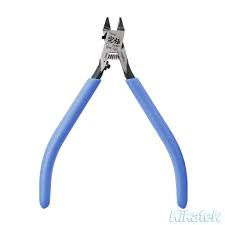
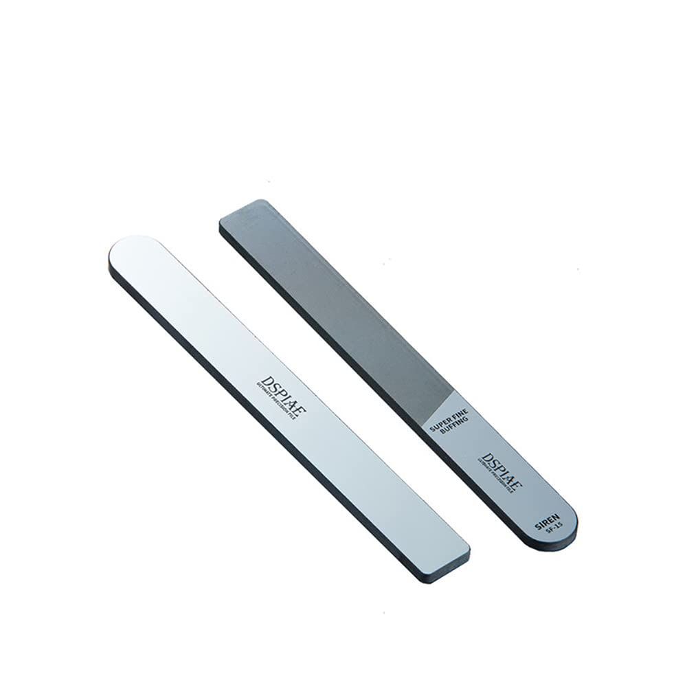
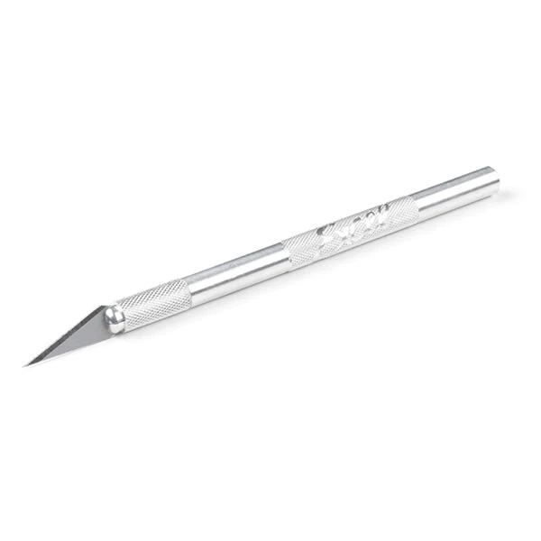

Tools you may need
It is not wise to build a plamo kit without some tools. While there are some kits that are meant for assembly without usage of tools (Bandai's Entry Grade), the vast majority will need some basic tools. Here are some tools below you should consider!
Nippers
A pair of hobby nippers are the most basic and bare minimum tool one needs in this hobby. Because the pieces are molded right onto the sheets of plastic (referred to as "runners"), we use nippers to cut the pieces off. If we tried to twist or pull the pieces off the runner, we risk damaging the pieces and the final product will not be good.
Sandpaper/Sanding file
When you cut parts off a runner, the part where it was joined to the runner will be visible. This is referred to as a nub. It is often recommended to cut the piece out with a bit of excess on the piece and then sand down the area where it was connected. We can then remove these nubs using some sort of sandpaper or file. I would usually recommend a glass file, it is easy to use and will remove the nub quickly. As you become more advanced, sandpaper might be recommended to prepare the surface for painting.
Hobby Knife
A hobby knife provides alot of utility. If you have issues shaving certain nubs that you can quite reach with your sanding material you can use a hobby knife. Also, some modifications
Other tools
The tools above are just the surface. Plamo is a hobby where you can get as deep as you want. Some other tools you should consider are plastic cement, panel liner fluid, and superglue. If you want to get into airbrushing, consider a respirator booth, respirator mask, airbrush, and much more!